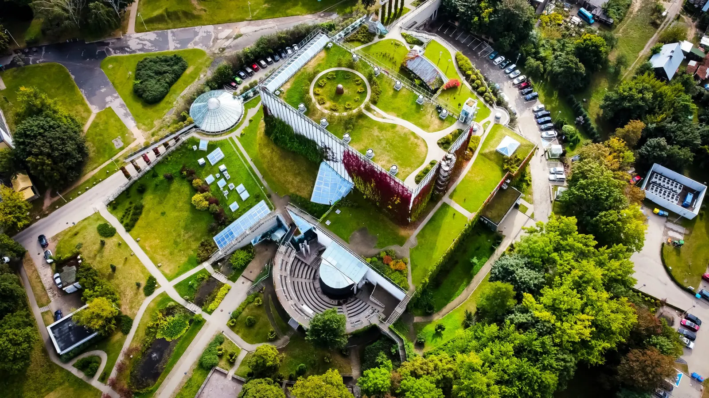
Zielona infrastruktura w miastach - znajdź miejsce na zieleń
Dachy zielone, retencja wód opadowych, dofinansowania i przepisy. Portal ekspercki o adaptacji miast do zmian klimatu, który prowadzimy od 2013 roku.
Czytaj najnowsze artykułyNajnowsze artykuły
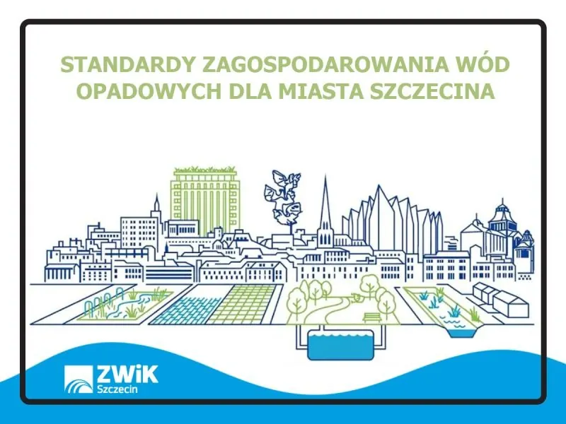
Zielona rewolucja na szczecińskich dachach. Jak nowe standardy retencji zmieniają podejście do miejskiej architektury
Wprowadzone w sierpniu 2026 roku „Standardy zagospodarowania wód opadowych dla miasta Szczecina” wprowadzają jasną hierarchię: woda ma zostać tam, gdzie spadła. Wśród rozwiązań opartych na przyrodzie ważną rolę odgrywają dachy zielone.
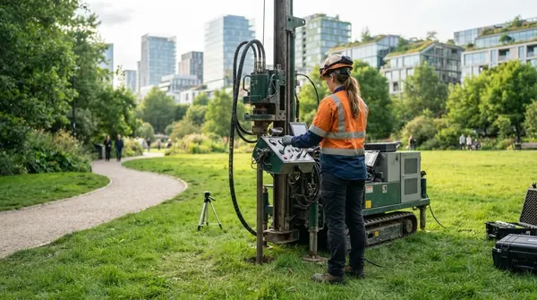
Badania gruntu pod zieloną infrastrukturę - dlaczego sondowanie CPTU ma znaczenie
Parki, skwery, ogrody deszczowe i pasy bioretencyjne wymagają dokładnej znajomości warunków gruntowo-wodnych.
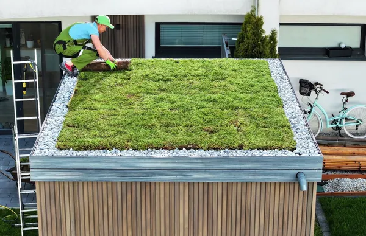
Czy zielony dach można połączyć z fotowoltaiką i pompą ciepła w jednym budynku?
Roślinność, moduły PV i pompa ciepła nie muszą ze sobą konkurować. Wymaga to decyzji na wczesnym etapie projektu.
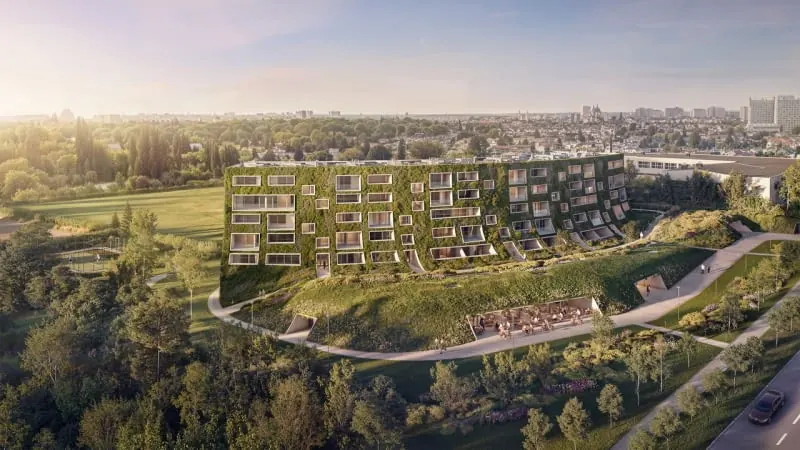
AURA w Poznaniu. 140 tysięcy roślin, retencja i architektura bliżej natury
Zielona elewacja aparthotelu projektu KWK Promes ma współtworzyć mikroklimat i korzystać z wody zatrzymywanej na działce.
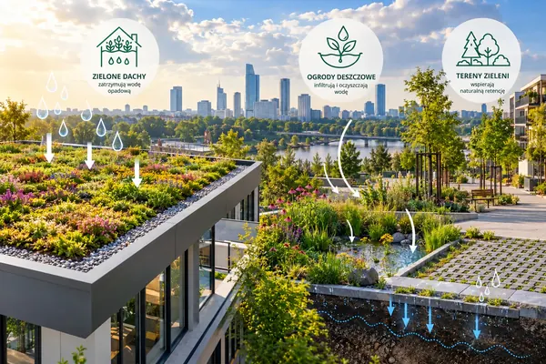
400 mln zł na zagospodarowanie wód opadowych w miastach
Nabór z programu FEnIKS: dachy zielone, ogrody deszczowe i tereny zieleni wspomagające naturalną retencję.
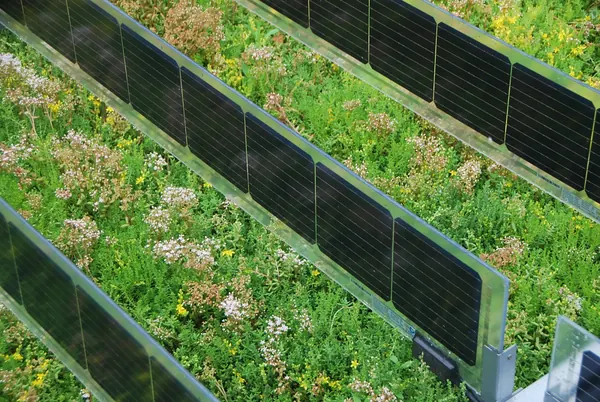
Pionowa fotowoltaika na zielonych dachach. Jak przygotować budynki na wymagania EPBD
Moduły ustawione pionowo zostawiają miejsce dla roślin i wody na tym samym dachu.
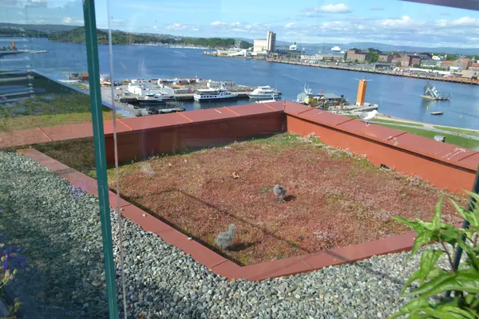
Zielone dachy jako siedliska przyrody. Jak wspierają bioróżnorodność w miastach?
Dach zielony może być domem dla owadów, ptaków i roślin, których brakuje w zabudowie.
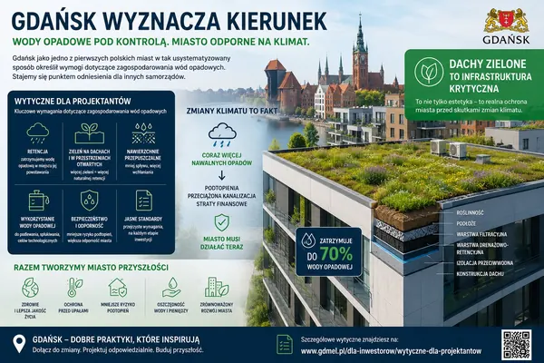
Gdańsk postawił na zieloną retencję. Dachy zielone w miejskiej strategii przeciwpowodziowej
Dachy zielone stają się elementem planu, który ma chronić miasto przed skutkami nawalnych deszczy.
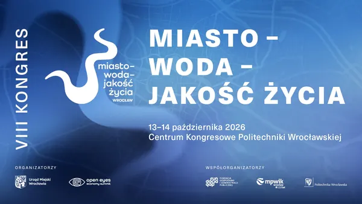
Czy Wrocław wróci na pierwsze miejsce wśród „wodnych miast”? VIII Kongres Miasto-Woda-Jakość Życia
Kongres w Centrum Kongresowym Politechniki Wrocławskiej, 13-14 października 2026.
Działy portalu
Od zielonego dachu na jednym domu po strategię całego miasta.
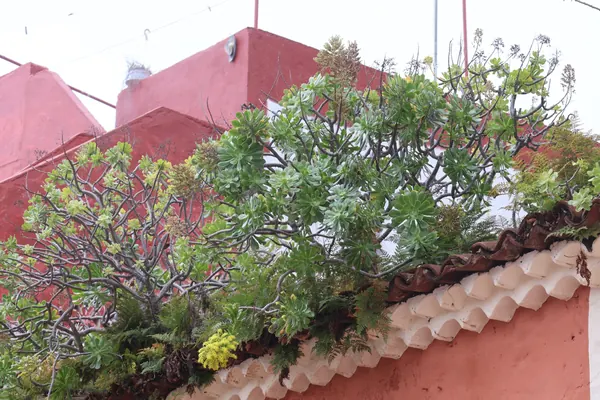
Dachy zielone
Projektowanie, rośliny, utrzymanie
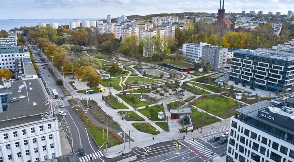
Retencja
Woda zostaje tam, gdzie spadła
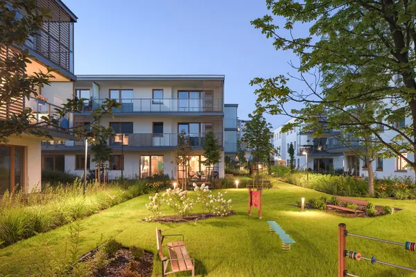
Miasta i NBS
Rozwiązania oparte na przyrodzie
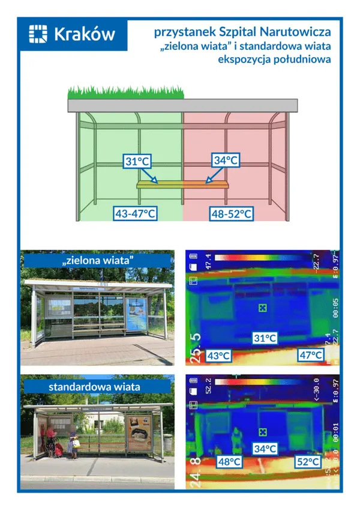
Miejska wyspa ciepła
Jak zieleń chłodzi ulice
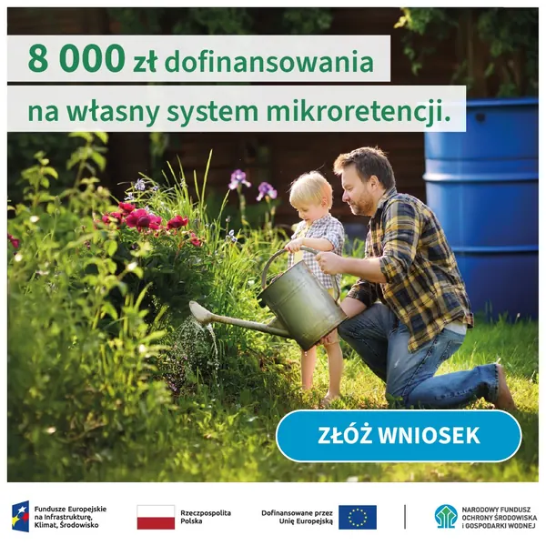
Dofinansowanie
Programy, nabory, ulgi
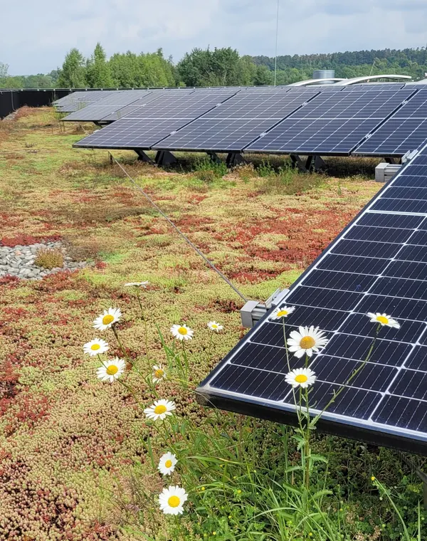
OZE na dachach
Dachy biosolarne i EPBD
Wszystkie działy:Tarasy / Zielone torowiska / Adaptacja do zmian klimatu / GOZ / Prawo / Fala renowacji / Fundusze Norweskie / Publikacje / Na weekend / Patronat medialny
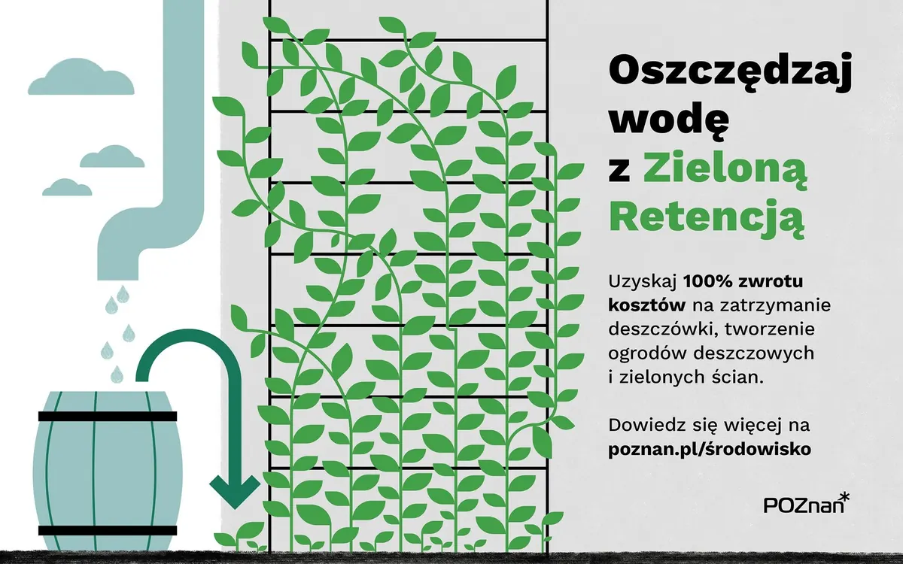
Pieniądze i przepisy na zieleń
Nabory, ulgi i nowe standardy, które decydują, czy w mieście powstanie zielony dach, ogród deszczowy albo ściana z pnączami.
- 14.10.2026
400 mln zł z programu FEnIKS na wody opadowe w miastach
Nabór wniosków od 15 października 2026 r. Wsparcie dla dachów zielonych, ogrodów deszczowych i terenów zieleni.
- 31.10.2026
Kalisz przedłuża ulgę na zielone dachy i fasady do 2031 roku
Zielony dach, ogród wertykalny albo elewacja z pnączami mogą oznaczać zwolnienie z podatku od nieruchomości.
- 10.11.2026
Szczecin: nowe standardy zagospodarowania wód opadowych
Zarządzenie nr 436/26 - deszczówka ma zostać na działce, a dachy zielone są jednym z rekomendowanych rozwiązań.
- 02.06.2026
Mikroretencja przydomowa - nawet 8 000 zł dla osób prywatnych
Zbiorniki na deszczówkę, ogrody deszczowe i oczka wodne przy domu z dofinansowaniem.
Piszą praktycy dachów zielonych
Portal powstał w 2013 roku. Specjalizujemy się w dachach zielonych i zielono-niebieskiej infrastrukturze w miastach i gminach, opracowujemy ekspertyzy i współtworzymy szkolenia, publikacje oraz konferencje.
- Wytyczne FLL po polskuByliśmy jednymi z inicjatorów i współautorami pierwszego i kolejnego polskiego wydania „Wytycznych dla dachów zielonych” FLL.
- Patent na rośliny dla dachów zielonychUdzielony w 2020 roku - wspólnie z Uniwersytetem Rolniczym w Krakowie.
- Źródło dla instytucjiNasze artykuły cytuje „Katalog dobrych praktyk adaptacyjnych” IOŚ-PIB.
- Strategie dla miastKonsultacje strategii dachów zielonych dla 8 miast pilotażowych, m.in. Krakowa, Warszawy, Wrocławia i Gdyni.
Członek jury World Green Infrastructure Award 2024 i 2025, członek Zarządu Polskiego Stowarzyszenia „Dachy Zielone”.
Od 16 lat zajmuje się dachami zielonymi: konsultuje projekty, przygotowuje opinie eksperckie, realizuje inwestycje.
Patronaty i wydarzenia
Obejmujemy patronatem medialnym konferencje o wodzie, zieleni i klimacie w miastach.
Współpraca z redakcją
Do współpracy podchodzimy indywidualnie. Współpracujemy z firmami i instytucjami, którym zależy na zielonym marketingu i ekowizerunku.
- Patronat medialnynad konferencją, kongresem lub szkoleniem
- Artykuł eksperckimerytorycznie związany z tematyką portalu
- Content marketingtreści o rozwiązaniach i realizacjach
- Reklamana stronie i w newsletterze
redakcja@zielonainfrastruktura.pl, tel. +48 793 00 44 14
Newsletter portalu
Najważniejsze artykuły, nabory i wydarzenia w jednej wiadomości.